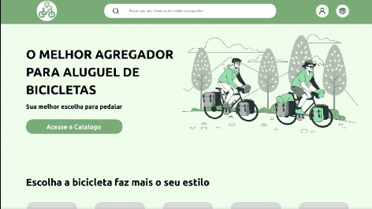
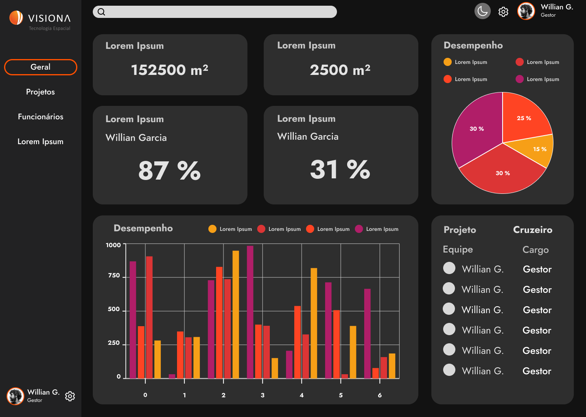
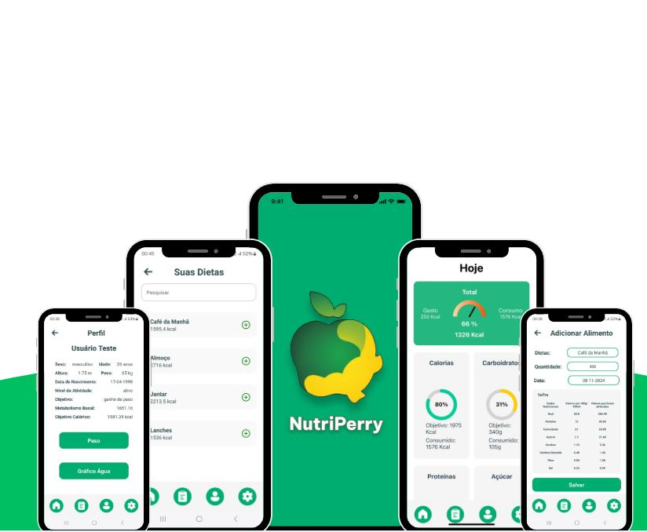
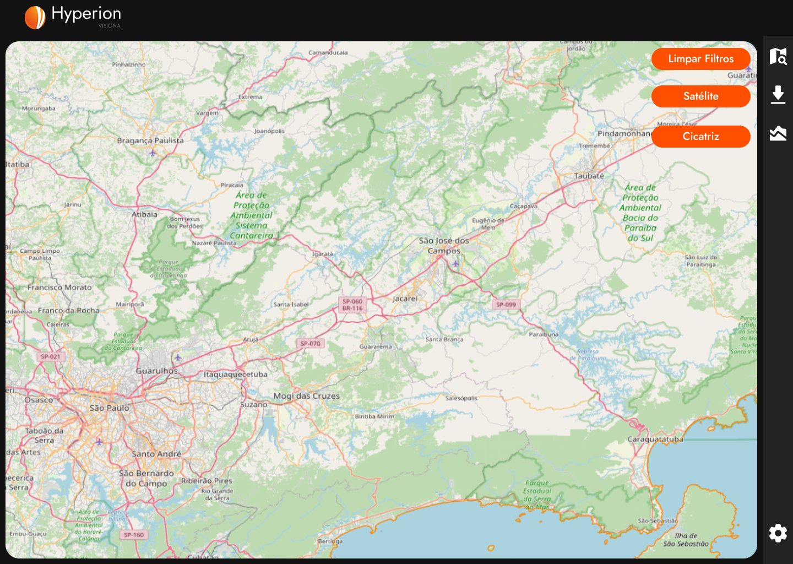

Heclair Sousa
Desenvolvedor Web & Procurement Specialist
Olá, me chamo Heclair. Sou formado em Engenharia de Produção pela ETEP Faculdades, tenho MBA em Logística e Supply Chain pela Universidade Anhembi Morumbi e sou Desenvolvedor de Software Multiplataforma pela FATEC (conclusão dezembro de 2025).
Atuo na área de Compras desde 2016, tendo trabalhado em multinacionais de grande porte como CAOA Chery, Bayer, Cielo e Ball. Meus projetos sempre foram focados em redução de custos utilizando a metodologia Strategic Sourcing em categorias como RH, Facilities e Tecnologia. Atualmente, atuo na harmonização de processos globais entre América do Norte e Europa, desenvolvendo soluções low code e dashboards analíticos para apoiar a tomada de decisão.


Portfólio
Treinamento Metodologia Ágil

O projeto tinha como objetivo a criação de um site utilizando HTML, CSS e o framework Bootstrap para a apresentação de um treinamento de metodologia ágil para os colaboradores da Fatec Jacareí.
Neste projeto houve a oportunidade de obter o primeiro contato com a metodologia ágil de projeto, utilizando as ferramentas Kanban e Scrum, além de aprender a utilizar o framework BootStrap e ser capaz de gerenciar a equipe na posição de Scrum Master.
Bike Pass

Com o objetivo de atender o nosso Stakeholder Gen App o projeto consistia no desenvolvimento de uma plataforma onde usuários podem disponibilizar suas bicicletas para locação.
O projeto foi desenvolvido utilizando o framework React para o frontend e TypeScript com Node e banco de dados PostgreSQL para o backend. Neste projeto houve a oportunidade de aprofundar o conhecimento em controllers, persistência de banco de dados, implementação de CRUD e navegação.
Satélite

O projeto Satélite tinha como objetivo atender as necessidades da empresa Visiona, que foi o stakeholder do projeto. O objetivo primário deste desenvolvimento era prover um sistema de gestão de produtividade das atividades dos colaboradores, oferecendo os principais KPIs solicitados.
Neste desenvolvimento houve foco no uso das tecnologias React com TypeScript e o primeiro contato da equipe com banco de dados não relacional, optando-se pelo MongoDB. Para exibição dos KPIs, utilizamos Power BI e Material UI.
NutriPerry

Com o objetivo de desenvolver uma aplicação móvel para a área da saúde, onde o usuário é capaz de fazer a gestão do seu consumo calórico, a equipe The Perry Dev desenvolveu o aplicativo móvel "NutryPerry".
Aprendi a utilizar o framework React Native e liderei o desenvolvimento do backend, incluindo a arquitetura de dados. Utilizamos banco de dados não relacional para armazenar as informações dos usuários, além de uma API para autenticação de login e consulta à tabela nutricional Open Food Facts.
Hyperion

Com base no desafio apresentado pela FATEC, a solução proposta pela The PerryDev consiste em criar um aplicativo web onde o usuário pode realizar o mapeamento automático de cicatrizes de queimadas em imagens do sensor WFI a bordo dos satélites CBERS4, CBERS4A e Amazônia 1.
Neste projeto tive a responsabilidade pelo desenvolvimento e treinamento do algoritmo que realizou o treinamento para identificação e classificação de cicatrizes de queimada, podendo me aprofundar no aprendizado de Python e me dedicar aos conteúdos de machine learning.
MindCare
O MindCare é um aplicativo focado em bem-estar emocional que utiliza um chatbot inteligente para apoiar o usuário no acompanhamento do seu estado emocional ao longo do tempo. A solução identifica o sentimento predominante nas mensagens enviadas e sugere trilhas de exercícios que ajudam o usuário a compreender suas emoções e lidar com elas de forma saudável. Em situações mais sensíveis, o aplicativo também recomenda a busca por apoio profissional e fornece informações sobre o Centro de Valorização da Vida (CVV).
No projeto MindCare, atuei no desenvolvimento do backend em Python utilizando FastAPI, sendo responsável pela criação da API de comunicação entre o app e o modelo de Inteligência Artificial. Desenvolvemos um pipeline completo de Processamento de Linguagem Natural (PLN) para classificação de emoções em português, utilizando técnicas como limpeza de texto, tokenização e vetorização com TF-IDF. Também treinamos um classificador supervisionado capaz de identificar emoções predominantes nas mensagens do usuário e retornar, além da emoção detectada, níveis de confiança e alertas de risco emocional. Por fim, realizei a integração total da API com o aplicativo móvel desenvolvido em React Native, garantindo respostas rápidas, seguras e adequadas à experiência do usuário.